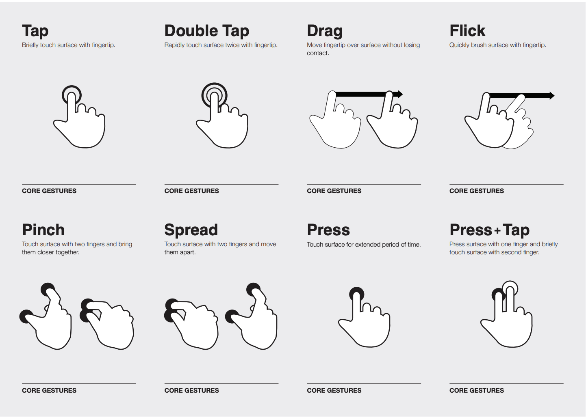
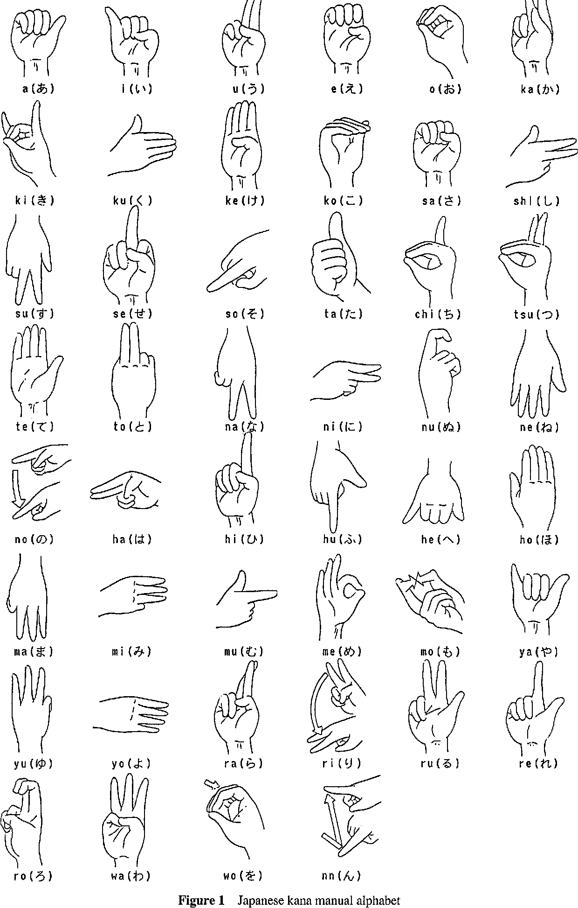
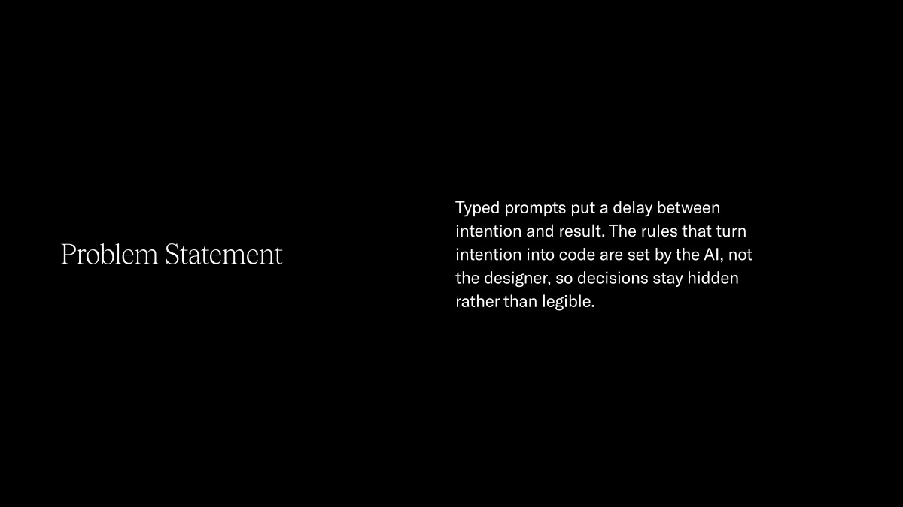
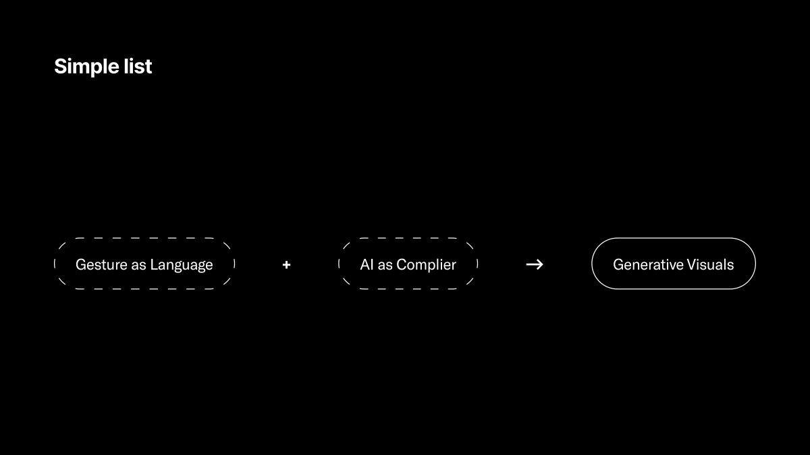
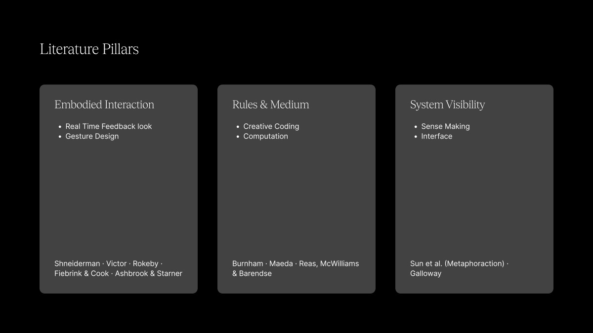

Week 8 · Semester 1 · 4 – 9 Oct
New Pillars
Trigger
Scoping down
For a long time I was lost, trying to scope down the bigger picture of the man and machine process. The experiments before this week are what helped. I was trying to show something invisible, and that is hard to visualise. TouchDesigner's noise and scaling interactions showed me what the machine sees. For the first time, what my hands did directly affected the computer, and it seemed to understand bigger, smaller and next, where the kerning agent had never seen my body at all. That was when I could see the relationship between man and machine clearly.
This was the week I got a clearer picture of what I wanted to do. Andreas had floated the idea of a gesture-based programming language, so I started working on that. The Research Proposal was due in Week 9, which meant I had one week to rebuild the whole literature review.


Reframe
From a tool to a language
My research question at the end of September asked how a creative tool could make the feedback loop between a designer and an AI visible. A week later it asked how a gesture-based grammar, compiled by an AI into p5.js, could make a designer's generative decisions legible, and what that grammar reveals about how those decisions are made.
Looking back, the feedback loop didn't disappear. It was the big frame: me and the machine communicating. TouchDesigner made that loop visible. But to act inside the loop, I need a way to talk to the machine, and that is a language. The esolangs showed me that a language can be designed by one person, on purpose. So the feedback loop filtered down into the language that runs it.
Part of this came from my own experience. Back then I was looking at programming from a JavaScript and HTML perspective, and that kind of language is hard to learn. It has to be learned, and for designers it is always a struggle. Designers are visual people, so what if a programming language were more visual?
I also added a claim: that designers steer through prompts whose grammar nobody designed for them. I was thinking about AI prompting, not programming languages. When Andreas later questioned it, it helped me see the difference more clearly. Processing is a programming language built for designers, but what I was talking about was prompting.
The AI also became a compiler in this version. The idea was whether AI could recognise the gestures we make and produce a visual from them. A friend put it well: throw a bunch of signs at the AI, and what output do you get? That is where “AI as a compiler” came from.


References
The readings I rebuilt it on
The biggest change was the first pillar. What Is a Feedback Loop (Ashby, Wiener, Pask) became Languages as Design Material. Pierce's account of programming languages shows that syntax decides which programs can be written at all. Esoteric languages like Befunge and Brainfuck break convention on purpose, which shows a grammar is a design choice. Sun et al.'s Metaphoraction brought this into gesture: mapping gesture to action, object and meaning, so a designer chooses what a gesture stands for instead of inheriting it by accident.
The other pillars carried over: direct manipulation (Shneiderman, Victor, Rokeby, Wekinator, plus Ashbrook and Starner's MAGIC, where people trusted video of their own gestures over sensor data), creative coding as building your own system (Burnham, Maeda, Form + Code), and making an invisible process visible (Naik et al., Reflexa, Peng et al., Turpin et al.). Pask, Boden and several older readings were dropped.
I then added a counter-argument. Galloway argues that showing a system's workings does not make it transparent, because the interface “never admits it”. I felt that where the literature pointed out a limit, I had to follow it. In the proposal I submitted, it became: “It is not claiming that this gesture system will make the process of AI fully legible, but it treats the interface as a sandbox that allows us to understand the choices made in gesture mapping.”

Pillars
The pillars I submitted
In the end I regrouped the four draft pillars into three of my own, and these are the pillars I submitted:
Embodied interaction: tactile, real-time feedback. “Reintroducing direct manipulation with physical gestures could help facilitate the tactility of a real-time feedback loop.”
Rules & Medium: creative coding, computation, cybernetics. “This research can explore a designer's agency more deeply through custom grammar rather than just text prompting.”
System Visibility: interface, sense-making. Comparing gesture vocabularies against each other rather than committing to the first that works.
Reflection
Reflecting
Framing. This week the problem itself changed. I stopped asking how to make the feedback loop visible and started asking how to design the language that runs it. Schön calls this problem setting: naming what to attend to and framing the context.
What I learned. The feedback loop didn't disappear. It filtered down into the language.
Letting go. Letting go was one of the biggest things I had to learn this week. I struggled to give up certain pillars, because I still felt they were important, and I had to let go of quite a lot. After going through so much literature, it felt like wasted effort. But I also realised that scoping down really does make a topic clearer. It is much easier to navigate than trying to find answers in a very wide picture.
Moving Forward
With the pillars set, Week 9 was about tightening the proposal for submission and showing it at the workcheck.
The compiler. At this point the idea of a compiler was still very unclear to me. I honestly thought it was like pressing enter and the computer understanding by itself, but it is deeper than that. I only really understood it in Week 11.
Three pillars. Merging the pillars into three felt more manageable. Dropping one made my scope more specific and gave me a clearer idea of what to do next, instead of beating around the bush without answering the question.
Why the hand. It goes back to my first experiments, where I found that body language mattered. Using a part of the body to write code is an interesting idea to explore, even if it isn't conventional. And gesturing is something we do every day; it holds more meaning than we think.